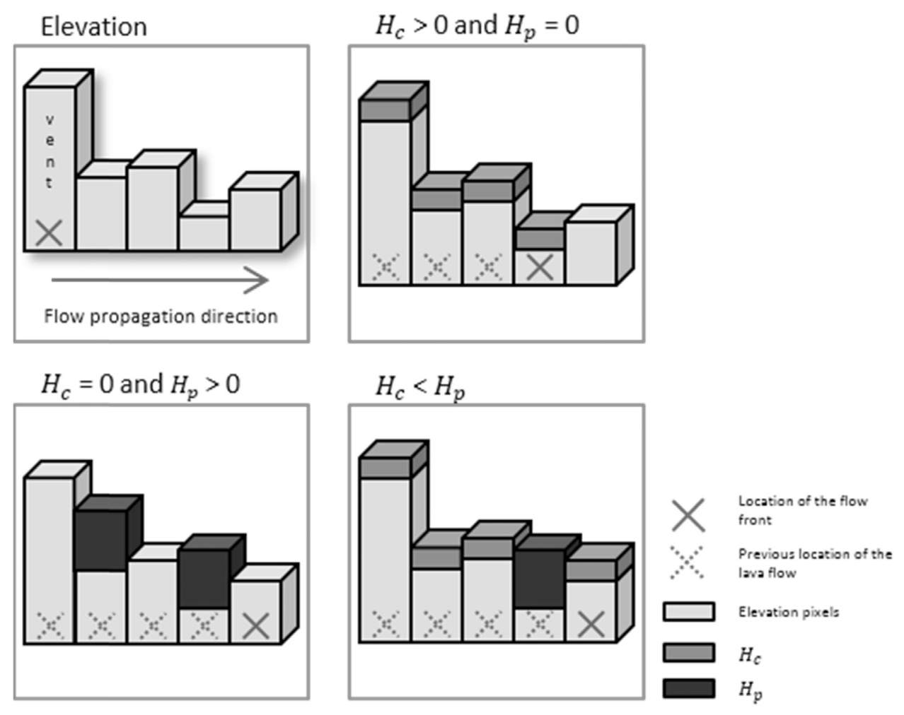

Q-LavHA
With the knowledge gained on topographic controls and modeling gained from the previous exercise, we will now look at Q-LavHA1 as an alternative approach for probabilistic hazard assessments for lava flow inundation. This part of the exercise assumes that you have already installed both QGIS and Q-LavHA. The Q-LavHA user manual contains some important information about how to configure the model and the data, so we encourage you to have a look at it at some point.
Objectives
- Review the theory behind
Q-LavHA - Understand the main assumptions behind the use of the model
- Perform probabilistic lava flow modeling for several vents in La Palma
behind Q-LavHA
Flow direction
The starting philosophy behind Q-LavHA is similar to the analysis performed for the path of steepest descent approach: the DEM, the model will try to estimate where the flow will go next based on the maximum \(\Delta h\) of the surrounding pixels. However, Q-LavHA uses a probabilistic approach to estimate this flow direction.
Firstly, as we saw, a lava flow is a viscous fluid with yield strength, which means that it can escape the steepest path and propagate laterally, fill depressions and overcome topographical obstacles. To account for that, Q-LavHA introduces 2 corrective factors:
- \(H_c\), representing the flow thickness.
- \(H_p\), representing the ability of a flow to inflate.
Together, these two parameters help avoiding the modelled flow getting stuck in topographic low and will allow it to spread laterally, as we saw the 2021 flow of La Palma was able to do.
Secondly, the initial estimation of path of steepest descent is performed stochastically similarly to what we previously looked at. Conceptually, one Q-LavHA output is constituted by the simulation of thousands of lava flows (1500 by default). Each lava flow simulation applies a path of steepest descent approach, but the selection of the next pixel is performed slightly differently:
- At each new pixel, the \(H_c\) and \(H_p\) corrections are applied to the active pixel according to Figure 1.
- Instead of selecting the pixel with the largest \(|\Delta h|\) as previously seen,
Q-LavHAassigns a relative probability of flow inundation to each surrounding pixel (see box below). - Using a random number generator,
Q-LavHAstochastically sample which pixel will be inundated next. With this approach, the pixel with the largest \(|\Delta h|\) has the highest probability of being inundated next, but other pixel also have a non-null probability of inundation.
Path of steepest descent in Q-LavHA
By default, Q-LavHA computes a relative probability across the 8 surrounding pixels using \(\Delta h^2\) according to:
If potential topographic obstacles are not overcome by the application of \(H_c\) and \(H_p\) around the 8 surrounding pixels, Q-LavHA extends its search to the next 16 surrounding pixels. Q-LavHA then transforms these relative probabilities into a cumulative probability function \(S_i\):
A random number \(rnd\) is then drawn in the \([0, 1[\) interval, and used to select the corresponding pixel in the range \([S_{i-1}, Si[\):

Flow length
Flow length is a critical metrics of lava flow hazard. However, since it depends on a complex interaction between eruption conditions at the source, flow rheology and topography through time and space, modelling the case-per-case physics of each flow is unrealistic in hazard assessment contexts. For this reason, Q-LavHA proposes three alternatives to compute maximum flow length:
- A maxiumum user defined length, using either Euclidean or Manhattan distances.
- A decreasing probability function based on existing flow databases.
- The cooling-limited flow model FLOWGO2.
Lava flow distance
As you can see from the geological map of La Palma, most historical flows on the island have reached the sea, so we will consider here that the flow distance is of limited importance. This assumption is however invalid in most cases. The probability function option allows you define a probability of flow length based on a mean and standard deviation of known lava flows length, which is a convenient way to treat this parameter probabilistically. Refer to the original paper1 for more information.
Probability of flow inundation
As previously seen, probability of lava flow inundation \(P\) at a given pixel \(i, j\) is generally computed as the number of inundation counts \(n_i\) normalised by the number of runs \(N_r\):
Where \(N_{r}\) is the total number of runs and \(n_{i}\) is defined as:
Depending on the modeling options adopted, Q-LavHA will slightly modify this approach. Refer to the original paper1 for more information.
Exercise
Install Q-LavHA
 Start by making sure that
Start by making sure that Q-LavHA has been properly installed according to this guide. You should see this icon in the toolbar.
In the Lava Flow exercise layer group in QGIS, activate the Vents Exercise layer. These vents correspond to those indicated in the Table below. Q-LavHA requires projected UTM coordinates, which are shown in the Easting and Northing columns (x and y columns, respectively). The UTM zone for La Palma is 28N, or EPSG:3268.
| Vent | Lat | Lon | Easting | Northing |
|---|---|---|---|---|
| Vent 1 | -17.83989 | 28.62507 | 222340 | 3169746 |
| Vent 2 | -17.86626 | 28.61262 | 219728 | 3168426 |
| Vent 3 | -17.84316 | 28.58782 | 221922 | 3165623 |
| Vent 4 | -17.81585 | 28.60777 | 224646 | 3167772 |
| Vent 5 | -17.84649 | 28.49699 | 221357 | 3155562 |
Food for thoughts
Summary
References
-
Mossoux, S., Saey, M., Bartolini, S., Poppe, S., Canters, F., Kervyn, M., 2016. Q-LAVHA: A flexible GIS plugin to simulate lava flows. Computers & Geosciences 97, 98–109. https://doi.org/10.1016/j.cageo.2016.09.003 ↩↩↩
-
Harris, A.J., Rowland, S. FLOWGO: a kinematic thermo-rheological model for lava flowing in a channel. Bull Volcanol 63, 20–44 (2001). https://doi.org/10.1007/s004450000120 ↩